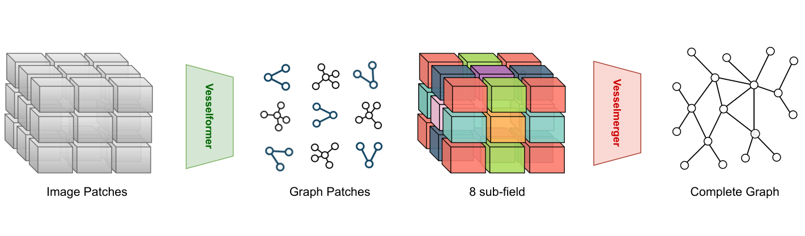
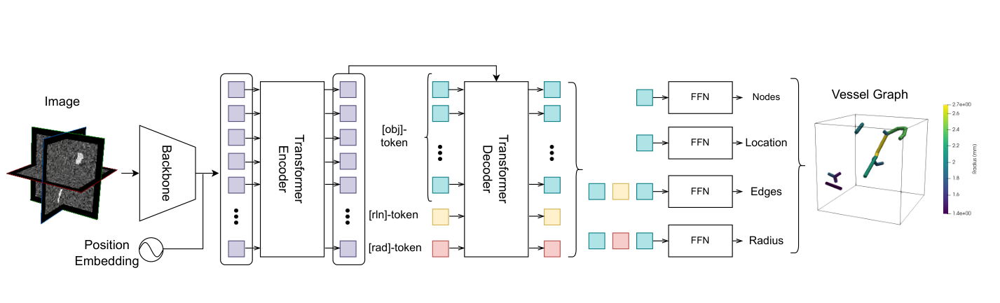
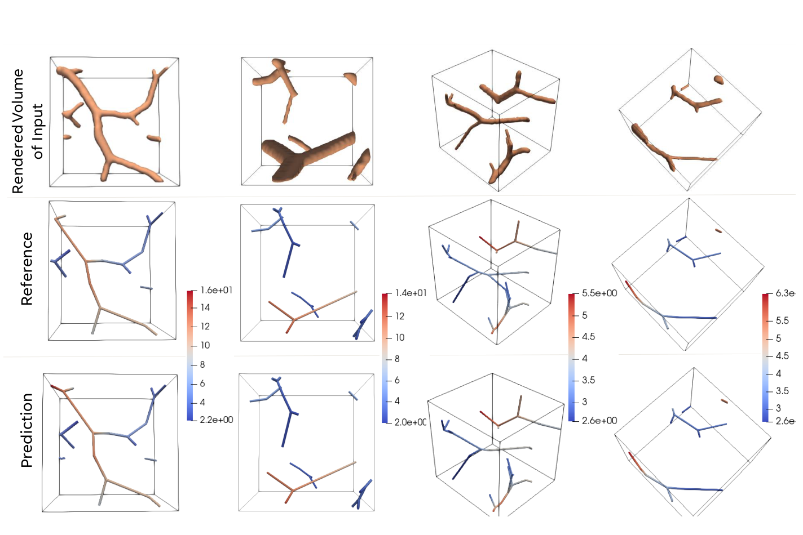
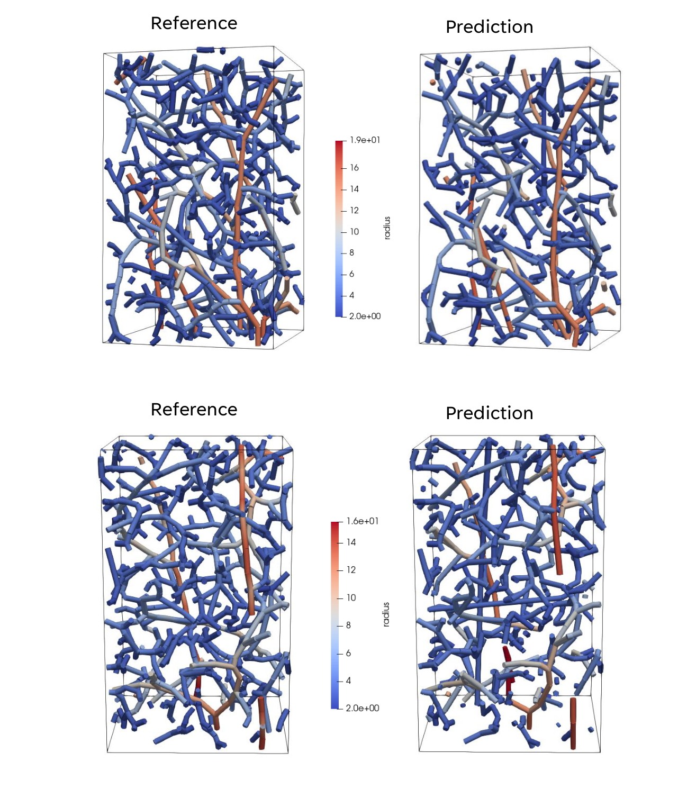

Patch-level image features
Extract features from 3D image patches for a transformer-based image-to-graph model.
MIDL 2023 · PMLR Vol. 227
Towards Complete 3D Vessel Graph Generation from Images
Presented at MIDL 2023; indexed in the PMLR 227 proceedings listing.
Original figure · Figure 2

Figure 2. VesselFormer pipeline: image patches → graph patches → 8 sub-fields → complete vessel graph.
Overview
Turning volumetric images into useful vascular graphs typically involves segmentation, skeletonization and graph pruning. VesselFormer instead learns to predict graph structure and radius-aware edge attributes directly from image content, then assembles patch-wise predictions into a full 3D graph.
Figures from the paper

Figure 3. VesselFormer architecture, including the dedicated radius token.

Figure 5. Qualitative comparison of reference and predicted vessel graphs.

Figure 7. Whole-volume graph reconstruction, shown alongside reference graphs.
Approach
Extract features from 3D image patches for a transformer-based image-to-graph model.
Learn node, connectivity and radius predictions, including a dedicated radius token.
Combine predictions from non-overlapping image patches into a coherent graph across the full volume.
Research directions
Avoid hand-crafted segmentation, skeletonization and pruning heuristics.
Predict edge attributes useful for downstream modeling, not only connectivity.
Use patch-wise inference and graph merging to cover larger 3D image volumes.
Resources
Read the published paper for the full methodology, experimental evaluation, and original figures. The public GitHub repository includes the research code.
Reference
@InProceedings{pmlr-v227-prabhakar24a,
title = {Vesselformer: Towards Complete 3D Vessel Graph Generation from Images},
author = {Prabhakar, Chinmay and Shit, Suprosanna and Paetzold, Johannes C. and Ezhov, Ivan and Koner, Rajat and Li, Hongwei and Kofler, Florian Sebastian and Menze, Bjoern},
booktitle = {Medical Imaging with Deep Learning},
pages = {320--331},
year = {2024},
volume = {227},
series = {Proceedings of Machine Learning Research},
publisher = {PMLR},
url = {https://proceedings.mlr.press/v227/prabhakar24a.html}
}Use the citation details from the publisher if the publication record is updated.